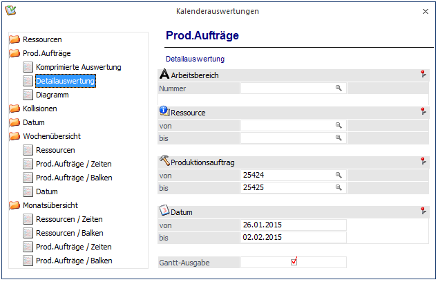
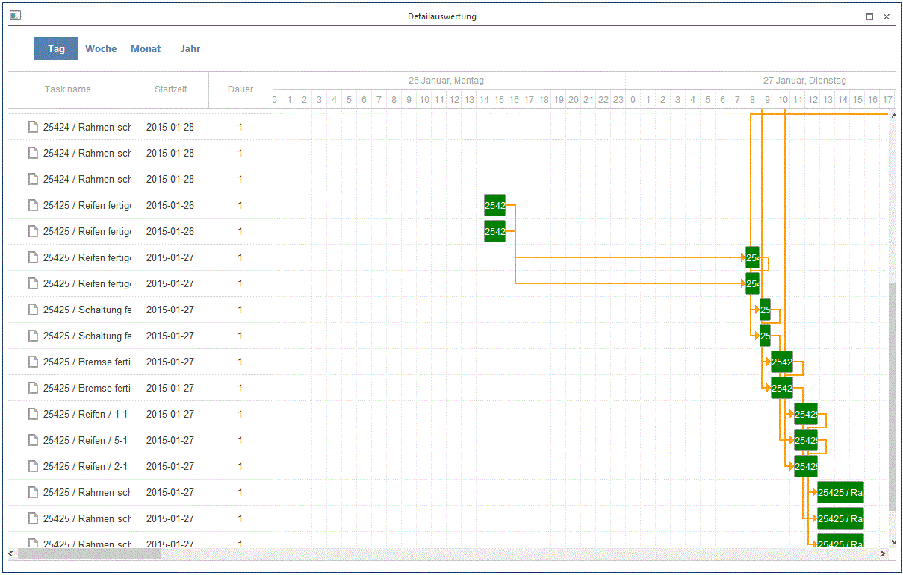
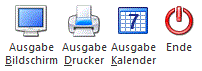
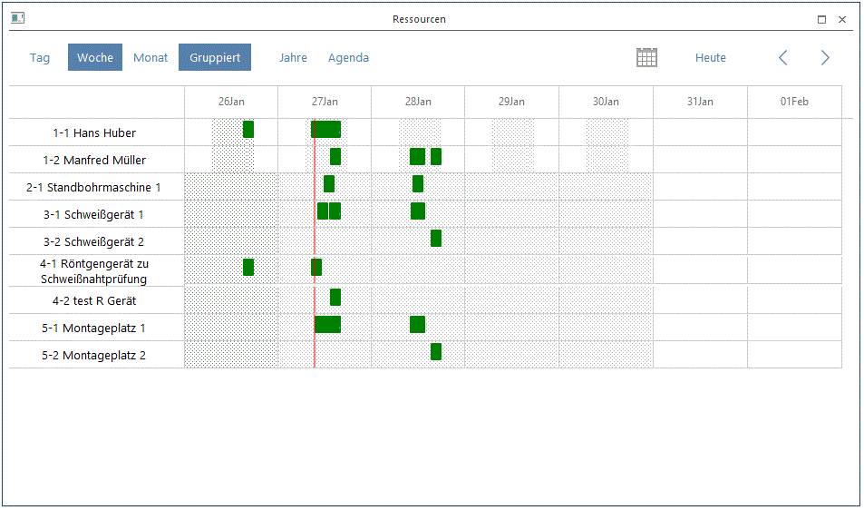
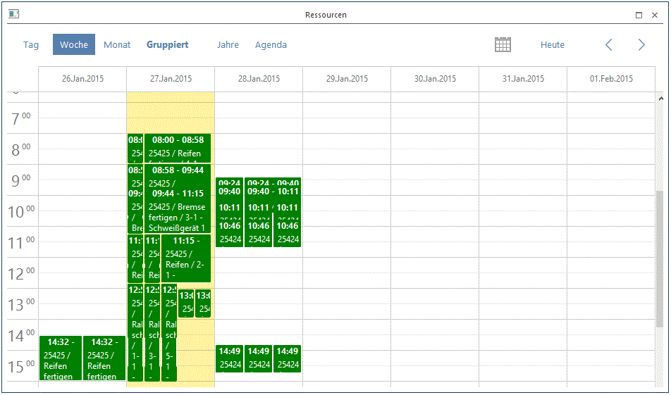

Im Menüpunkt
1 WinLine PPS
1 Auswertungen
1 Kalenderauswertungen
können die Einträge im Produktionskalender ausgewertet werden (wann was verfügbar - reserviert ist).
Auf der linken Seite kann aus der Baumstruktur die Art der Auswertung ausgewählt werden. Abhängig von der Liste werden auch unterschiedliche Felder für die Einschränkung angezeigt.
Ø Auswertung
ü Ressourcen
Hier erfolgt die
Auswertung aufgrund der Ressourcen. D.h. es wird angezeigt, wann welche
Ressource zur Verfügung steht und zu welchen Zeiten diese reserviert wurde.
ü Prod.Aufträge
Hier erfolgt die
Auswertung aufgrund der Projekte. D.h. es wird angezeigt, zu welchen Zeiten
Reservierungen für dieses Projekt erfolgt sind.
ü Kollisionen
Mit dieser
Auswertung werden jene Tätigkeiten aufgelistet, bei denen es zur einer Kollision
kommt, d.h. welche Tätigkeiten nicht reserviert werden konnten.
ü Wochenübersicht
Bei der
Wochenübersicht gibt es wieder mehrere Unterteilungen:
ü Monatsübersicht
Ist diese
Checkbox aktiv, kann eine Monatsübersicht über die Reservierungen basierend auf
den Ressourcen oder den Projekten ausgegeben werden. Es kann jeweils entweder
eine Zeitenübersicht oder eine Balkenübersicht ausgegeben werden.

Ø Datum von - bis
Einschränkung auf das Reservierungsdatum.
Ø Ressource von - bis
Einschränkung der Ressourcen, die ausgewertet werden sollen.
Ø Projekt von - bis
Einschränkung der Projekte, die ausgewertet werden sollen.
Ø Gantt-Ausgabe
Diese Checkbox steht bei den folgenden Auswertungsvarianten zur Verfügung:
ü Ressourcen
ü Komprimierte Auswertung
ü Detailauswertung
Mit aktivierter Checkbox kann die Kalenderausgabe als Gantt-Chart ausgegeben werden. Wenn nicht aktiviert, wird die Kalenderausgabe als normale Kalenderansicht ausgegeben werden.
Beispiel
Kalenderauswertung, Variante "Detail Auswertung", als Kalender/Gantt-Ausgabe:

Buttons

Ø Ausgabe Bildschirm
Mit diesem Button wird die Kalenderauswertung auf den Bildschirm ausgegeben. Die Auswertung wird mit einem WinLine-Formular ausgegeben (abhängig von der selektierten Ausgabe mit einer Variante vom Formular: P99W81***).
Ø Ausgabe Drucker
Mit diesem Button wird die Kalenderauswertung auf den Drucker (bzw. Spooler) ausgegeben. Die Auswertung wird mit einem WinLine-Formular ausgegeben (abhängig von der selektierten Ausgabe mit einer Variante vom Formular: P99W81***).
Ø Ausgabe Kalender
Mit diesem Button wird die Kalenderauswertung in einem Kalenderansicht-Fenster auf HTML-Basis ausgegeben. Der Button kann bei den folgenden Auswertungsvarianten verwendet werden:
ü Ressourcen
ü Komprimierte Auswertung
ü Detailauswertung
Die Kalenderansicht kann in einer Tag-, Woche-, Monat-, oder Jahr-Darstellungsform organisiert werden. Zusätzlich können die Kalendereinträge (Balken) in einer gruppierten oder nicht gruppierten Ansicht dargestellt werden.
Beispiel
Kalenderauswertung, Variante "Ressourcen", als Kalender Ausgabe in der gruppierten Ansicht:

Kalenderauswertung, Variante "Ressourcen", als Kalender Ausgabe in der nicht gruppierten Ansicht:

Ø Ende
Das Fenster kann mit diesem Button geschlossen werden.